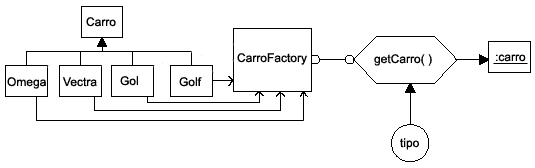
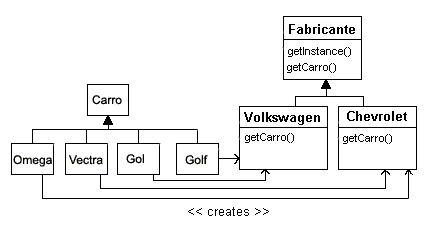
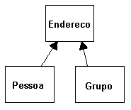

Implementando Design Patterns com Java
em 10/04/2004
, por Daniel Destro
Creational (Criacional)
Structural (Estrutural)
Behavioral (Comportamental)
Neste artigo, estaremos apresentando todos os padrões de cada tipo e exemplificando alguns deles com diagramas UML e código Java.
Eles foram provados. Os padrões refletem a experiência, conhecimento e soluções dos desenvolvedores que tiveram sucesso usando esses padrões em seus trabalhos.
São reusáveis. Os padrões provêem uma solução pronta que pode ser aplicada à diferentes problemas.
São expressíveis. Os padrões provêem um vocabulário comum de soluções que podem expressar muitas soluções, sucintamente.
É importante lembrar que os padrões, por si só, não garantem o sucesso do seu uso. A descrição do padrão indica quando ele pode ser aplicado, mas apenas a experiência pode proporcionar o entendimento de quando um padrão particular irá melhorar o desenho do sistema.
A motivação ou o contexto que o padrão se aplica;
Pré-requisitos que devem ser satisfeitos antes de se decidir aplicar um padrão;
Uma descrição da estrutura do programa que o padrão será definido;
Uma lista dos participantes necessários para completar um padrão;
Conseqüências do uso do padrão, positivas e negativas;
Exemplos.
No entanto, isto torna a criação de objetos no seu programa um tanto quanto imaleável, inflexível. Em muitos casos, a natureza dos objetos que são criados pode variar com as necessidades do programa e a abstração do processo de criação de objetos para uma classe especial de "criação" pode fazer seu programa mais flexível e geral. O catálogo da GoF apresentas os seguintes Creational Patterns: Factory Method - provê uma classe de decisão, na qual retorna uma das muitas possíveis subclasses de uma classe base abstrata, dependendo do dado fornecido. Abstract Factory Method - provê uma interface para se criar e retornar uma de muitas famílias de objetos relacionados. Singleton - provê uma classe que não pode haver mais do que uma única instância, e proporciona um ponto comum e global para se acessar aquela instância. Builder - separa a construção de um objeto complexo de sua representação, para que de diferentes representações possam ser criadas dependendo das necessidades do programa. Prototype - começa com uma classe iniciada e instanciada que copia ou gera um clone dela para se fazer novas instâncias, ao invés de se criar novas instâncias. Vamos agora aos exemplos práticos de implementação de alguns padrões descritos acima.
Agora nossa classe Factory, que é bem simples, e decide qual classe será instanciada, dependendo do parâmetro do tipo passado para o método getClass( ).
Vamos agora implementar a classe que se utiliza de todo este aparato do padrão Factory.
Compile todas as classes para que possamos executar o exemplo acima.
Esse é o principio fundamental do padrão Factory Method. Você cria uma abstração, na qual se decide qual das opções de classe retornar. Então você apenas chama o método comum desta classe, sem sequer saber ou se preocupar qual classe você está realmente lhe dando. Padrões relacionados: Abstract Factory - O padrão Factory é útil para se construir objetos individuais, para um propósito específico, sem que a construção requeira conhecimento das classes específicas sendo instanciadas. Se você precisar criar um grupo combinado de tais objetos, então o padrão Abstract Factory é o mais apropriado.
Template - O padrão Factory é freqüentemente usando com o padrão Template.
Prototype - O padrão Prototype provê uma alternativa para um objeto trabalhar com outros objetos sem que conheça os detalhes de construção.
Veja agora, no nosso exemplo, como foram usadas as classes no Abstract Factory:
Compile todas as classes para que possamos executar o exemplo acima.
Padrões relacionados: Factory Method - O Abstract Factory pode usar o padrão Factory Method.
Singleton - Classes Factory Concretas são usualmente implementadas como uma classe Singleton.
Atente aos métodos construtor e ao getInstance( ), que caracterizam o padrão Singleton. No construtor, neste exemplo, o DBConnectionPool cria as conexões do pool normalmente. Já no getInstance( ), ele verifica se já existe uma instância da classe, caso não, ele instancia e retorna o objeto. Em contrapartida, as classes que implementam o padrão Singleton tornam-se difíceis de serem estendidas, mas o seu uso, no geral, é muito benéfico quando necessário em seu programa.
O Builder deixa você variar a representação interna do produto que ele cria. Ele também esconde os detalhes de como o produto é montado.
Cada Builder específico é independente de outros e do resto do programa. Isso melhora a modularidade e faz a adição de outros Builder relativamente simples.
Como cada Builder constrói o produto final passo-a-passo, dependendo dos dados, você tem mais controle sobre o produto final construído.
O padrão Builder é algo como o Abstract Factory, na qual ambos retornam feitas de um número de métodos e objetos. A principal diferença é que enquanto o Abstract Factory retorna uma família de classes relacionadas, o Builder constrói um objeto complexo passo-a-passo, dependendo dos dados apresentados a ele.
Padrões Relacionados:
Interface - O padrão Builder usa o padrão Interface para esconder a classe atual do objeto que ela constrói.
Composite - O objeto construído pelo Builder é tipicamente um Composite.
Factory Method - O padrão Builder usa o padrão Factory para decidir que classe concreta instanciar para construir o tipo de objeto desejado.
Layered Initialization - O padrão Builder usa o padrão Layered Initialization para cria objetos que constroem o tipo de objeto desejado.
Implementando Design Patterns com Java
O objetivo deste artigo é mostrar um pouco dos mais importantes design patterns existentes, explicando-os e exemplificando-os através de implementação de códigos em Java. É desejável um conhecimento um pouco avançado das técnicas de programação, da tecnologia Java e do paradígma OO, para um melhor aproveitamento.
1) BREVE HISTÓRICO
A origem dos Design Patterns (Padrões de Desenho) vem do trabalho de um arquiteto chamado Christopher Alexander, no final da década de 70. Ele escreveu dois livros, inicialmente, A Pattern Language [Alex77] e A Timeless Way of Building [Alex79], nos quais ele exemplificava o uso e descrevia seu raciocínio para documentar os padrões.
Em 1995, um grupo de quatro profissionais escreveu e lançou o livro "Design Patterns: Elements of Reusable Object-Oriented Software" [Gamma95], um catálogo com 23 padrões de desenho (design patterns). Ou autores: Erich Gamma, Richard Helm, Ralph Johnson, and John Vlissides, ficaram mais conhecidos como A Gangue dos Quatro (Gang Of Four ou GoF), considerados os maiores entusiastas dos Design Patterns.
2) DESIGN PATTERNS
2.1) O QUE SÃO OS DESIGN PATTERNS?
Os Design Patterns são uma coleção de padrões de desenho de software, que são soluções para problemas conhecidos e recorrentes no desenvolvimento de software.
Um Pattern descreve uma solução comprovada para um problema de desenho recorrente, dando ênfase particular no contexto e forçando a aproximação do problema, e as conseqüências e o impacto de sua solução.
Patterns são dispositivos que permitem que os programas compartilhem conhecimento sobre o seu desenho. Quando programamos, nós encontramos muitos problemas que ocorrem, ocorreram e irão ocorrer novamente. A questão que nos perguntamos agora é como nós vamos solucionar este problema desta vez? Documentar um padrão (pattern) é uma maneira de você poder reusar e possivelmente compartilhar informação que você aprendeu sobre a melhor maneira de se resolver um problema de desenho de software.
O catálogo de padrões do GoF (Gang Of Four), como dito, contém 23 padrões e está, basicamente, dividido em três seções:
2.2) PORQUE USAR OS PATTERNS?
2.3) DOCUMENTANDO UM PATTERN
A intenção e motivação de se criar um Design Pattern é poder abstrair um problema recorrente e criar uma solução viável, além do que poder compartilhar este conhecimento para que outras pessoas se beneficiem dele. A documentação de um Design Pattern é feita numa forma muito bem definida. A forma geral para se documentar um padrão inclui a definição dos seguintes itens:
3) EXPLICANDO E IMPLEMENTANDO OS DESIGN PATTERNS
3.1) CREATIONAL PATTERNS
Todos os padrões criacionais (Creational) lidam com a melhor forma de se criar instâncias dos objetos. Isto é importante porque seu programa não deveria depender de como os objetos são criados e arranjados. Em Java, a maneira mais simples de se criar um objeto é se usando o operador new.
- UmaClasse objeto = new UmaClasse( );
No entanto, isto torna a criação de objetos no seu programa um tanto quanto imaleável, inflexível. Em muitos casos, a natureza dos objetos que são criados pode variar com as necessidades do programa e a abstração do processo de criação de objetos para uma classe especial de "criação" pode fazer seu programa mais flexível e geral. O catálogo da GoF apresentas os seguintes Creational Patterns: Factory Method - provê uma classe de decisão, na qual retorna uma das muitas possíveis subclasses de uma classe base abstrata, dependendo do dado fornecido. Abstract Factory Method - provê uma interface para se criar e retornar uma de muitas famílias de objetos relacionados. Singleton - provê uma classe que não pode haver mais do que uma única instância, e proporciona um ponto comum e global para se acessar aquela instância. Builder - separa a construção de um objeto complexo de sua representação, para que de diferentes representações possam ser criadas dependendo das necessidades do programa. Prototype - começa com uma classe iniciada e instanciada que copia ou gera um clone dela para se fazer novas instâncias, ao invés de se criar novas instâncias. Vamos agora aos exemplos práticos de implementação de alguns padrões descritos acima.
3.1.1) FACTORY METHOD
Este é um tipo bem comum de padrão utilizado nos programas orientados ao objeto. O padrão Factory Method é caracterizado por retornar uma instância dentre muitas possíveis classes, dependendo dos dados providos a ele. Geralmente, todas as classes que ele retorna têm uma classe pai e métodos em comum, mas cada um executa tarefas diferentes e é otimizado para diferentes tipos de dados.
Para entender como o padrão Factory funciona, vamos dar uma olhada no diagrama e exemplo abaixo.

No diagrama descrito acima, Carro é a classe base (pai) e as classes Vectra, Omega, Gol e Golf derivam dela (filhas). A classe CarroFactory é a classe Factory que decide qual das subclasses retornar, dependendo dos argumentos que você passar ao método factory dela. Nós definimos o método getCarro(), como o método factory que recebe um parâmetro (tipo) e retorna uma instância da classe Carro, representado no diagrama por :carro. Qual classe ele retorna, não importa ao programador, desde que todos eles tenham os mesmos métodos, mas diferentes implementações. Qual subclasse de Carro será retornada é estritamente decidido pela classe CarroFactory.
Vamos considerar um caso simples onde nós podemos usar uma classe Factory. Suponha que nós temos um sistema de consulta de preços de veículos. Informamos qual carro queremos consultar o preço, então a classe factory nos retorna uma instância dele e então consultamos o preço.
Vamos, então, dar uma olhada na implementação:
- public abstract class Carro {
- protected float valor;
- public float getPreco() {
- return valor;
- }
- }
- public class Vectra extends Carro {
- public Vectra() {
- valor = 30000.0f;
- }
- }
- public class Omega extends Carro {
- public Omega() {
- valor = 50000.0f;
- }
- }
- public class Golf extends Carro {
- public Golf() {
- valor = 35000.0f;
- }
- }
- public class Gol extends Carro {
- public Gol() {
- valor = 20000.0f;
- }
- }
Agora nossa classe Factory, que é bem simples, e decide qual classe será instanciada, dependendo do parâmetro do tipo passado para o método getClass( ).
- public class CarroFactory {
- public static Carro getCarro( String tipoCarro ) {
- if( tipoCarro == null ) return null;
- else if( tipoCarro.equals("Vectra") ) return new Vectra();
- else if( tipoCarro.equals("Omega") ) return new Omega();
- else if( tipoCarro.equals("Golf") ) return new Golf();
- else if( tipoCarro.equals("Gol") ) return new Gol();
- else return null;
- }
- }
Vamos agora implementar a classe que se utiliza de todo este aparato do padrão Factory.
- public class FactoryExample {
- public static void main( String args[] ) {
- //parâmetro passado como argumento no console
- //pega a instância do tipo do carro
- Carro carro = CarroFactory.getCarro( args[0] );
- //mostra o valor
- if( carro != null ) {
- System.out.println( "Preço: " + carro.getPreco() );
- }
- }
- }
Compile todas as classes para que possamos executar o exemplo acima.
- > javac *.java
- > java FactoryExample Vectra
Esse é o principio fundamental do padrão Factory Method. Você cria uma abstração, na qual se decide qual das opções de classe retornar. Então você apenas chama o método comum desta classe, sem sequer saber ou se preocupar qual classe você está realmente lhe dando. Padrões relacionados:
3.1.2) ABSTRACT FACTORY METHOD
O padrão Abstract Factory está a um nível de abstração maior do que o padrão Factory Method. Você pode usar este padrão quando deseja retornar uma das muitas classes de objetos relacionadas, cada qual pode retornar diferentes objetos se requisitado. Em outras palavras, o padrão Abstract Factory é uma fábrica de objetos que retorna uma das várias fábricas.
Uma aplicação clássica do Abstract Factory é o caso onde o seu sistema precisa de suporte a múltiplos tipos de interfaces gráficas, como Windows, Motif ou MacIntosh. Você diz ao factory que quer que seu programa se pareça com o Windows e ele retorna a fábrica GUI que retorna os objetos relativos ao Windows. Então, quando você requisita um objeto específico como um botão, check-boxes e janelas, a fábrica de GUI retorna as instâncias desses componentes para o Windows.
Para vermos o exemplo prático e entendermos o Abstract Factory, vamos utilizar o exemplo parecido com o anterior, porém estendido. Veja o diagrama:

Agora, adicional ao diagrama anterior, temos a classe Fabricante e suas subclasses, e a estrutura estática do modelo mudou, com relação ao modelo anterior.
Implementando o modelo proposto, temos os seguintes códigos-fonte adicionais:
- public abstract class Fabricante {
- protected String name;
- public abstract Carro getCarro( String marca );
- public static Fabricante getInstance( String fabricante ) {
- if( fabricante == null ) {
- return null;
- }
- else if(fabricante.equals("Chevrolet")) {
- return new Chevrolet();
- }
- else if(fabricante.equals("Volkswagen")) {
- return new Volkswagen();
- }
- else {
- return null;
- }
- }
- }
- public class Chevrolet extends Fabricante {
- public Chevrolet() {
- name = "Chevrolet";
- }
- public Carro getCarro( String marca ) {
- if( marca == null ) {
- return null;
- }
- else if( marca.equals("Vectra") ) {
- return new Vectra();
- }
- else if( marca.equals("Omega") ) {
- return new Omega();
- }
- else {
- return null;
- }
- }
- }
- public class Volkswagen extends Fabricante {
- public Volkswagen() {
- name = "Volkswagen";
- }
- public Carro getCarro( String marca ) {
- if( marca == null ) {
- return null;
- }
- else if( marca.equals("Gol") ) {
- return new Gol();
- }
- else if( marca.equals("Golf") ) {
- return new Golf();
- }
- else {
- return null;
- }
- }
- }
Veja agora, no nosso exemplo, como foram usadas as classes no Abstract Factory:
- public class AbstractFactoryExample {
- public static void main( String args[] ) {
- //parâmetro passado como argumento no console
- //pega a instância do fabricante
- Fabricante fab = Fabricante.getInstance( args[0] );
- //pega a instância do carro, de acordo com o fabricante
- Carro carro = fab.getCarro( args[1] );
- //mostra o valor
- if( carro != null ) {
- System.out.println( "Preço: " + carro.getPreco() );
- }
- }
- }
Compile todas as classes para que possamos executar o exemplo acima.
- > javac *.java
- > java AbstractFactoryExample Chevrolet Vectra
Padrões relacionados:
3.1.3) SINGLETON
O padrão Singleton assegura que apenas uma única instância daquela classe vai existir. Por exemplo, seu sistema pode ter apenas um gerenciador de janelas, ou gerenciador de impressão, ou então um único ponto de acesso ao banco de dados.
A maneira mais fácil de se fazer uma classe que possua uma única instância dela mesma é utilizar uma variável estática na classe, onde será guardada a referência para a instância corrente.
No caso do Singleton, a classe dever ter um construtor private, ou seja, ela não poderá ser instanciada diretamente, mas sim fornecer um método comum para que a instância única da classe seja retornada. Cada vez que esse método for chamado, ele deve checar se já existe uma instância da classe e retorná-la, caso contrário ele deve instanciar a classe, guardar a referência ao objeto no atributo estático da classe e então retorná-lo.
Vejamos um simples exemplo da implementação deste padrão:
- import java.sql.Connection;
- public class DBConnectionPool {
- private static DBConnectionPool instance;
- private DBConnectionPool() {
- // cria conexões para o banco de dados
- }
- public synchronized static DBConnectionPool getInstance() {
- if( instance == null ) {
- instance = new DBConnectionPool();
- }
- return instance;
- }
- public Connection getConnection() {
- Connection conn = null;
- //pega uma conexão livre ou uma nova conexão
- return conn;
- }
- public void releaseConnection( Connection conn ) {
- //libera a conexão de volta pro pool
- }
- }
Atente aos métodos construtor e ao getInstance( ), que caracterizam o padrão Singleton. No construtor, neste exemplo, o DBConnectionPool cria as conexões do pool normalmente. Já no getInstance( ), ele verifica se já existe uma instância da classe, caso não, ele instancia e retorna o objeto. Em contrapartida, as classes que implementam o padrão Singleton tornam-se difíceis de serem estendidas, mas o seu uso, no geral, é muito benéfico quando necessário em seu programa.
3.1.4) BUILDER
Nós já vimos que o padrão Factory Method retorna uma de diferentes subclasses, dependendo do dado passado como argumento aos métodos de criação. Mas, suponha que você não queira apenas um algoritmo de computação, mas uma interface gráfica diferente, dependendo do dado que nós precisamos mostrar. Um exemplo típico pode ser sua agenda de e-mails. Você provavelmente tem pessoas e grupos de pessoas cadastradas, e você espera que a tela da agenda de e-mails seja tal para que tenha espaços para o nome, empresa, e-mail e fone. Por outro lado, se você estava mostrando um grupo de e-mails, você gostaria de ver o nome do grupo, seu propósito e uma lista com os membros deste grupo, com seus respectivos e-mails.
Quando você clica em uma pessoa você tem uma tela, quando clica em um grupo você tem outra tela. Assumimos que todos os e-mails são mantidos em um objeto chamado Endereco e que pessoas e grupos são derivados desta classe base, como mostrado no diagrama.

Dependendo do tipo do objeto Endereco que nós clicamos, nós gostaríamos de ver uma tela diferente das propriedades daquele objeto. Isto é um pouco mais do que uma simples classe Factory, porque nós não estamos retornando objetos que são simplesmente descendentes de um objeto base da tela, mas totalmente diferentes um do outro (telas diferentes). O padrão Builder constrói um número de objetos, como telinhas, de vários modos, dependendo dos dados. Java, então, é a linguagem ideal para se implementar o padrão Builder, pois você pode separar os dados dos seus métodos de apresentação em simples objetos.
Conseqüências do padrão Builder: